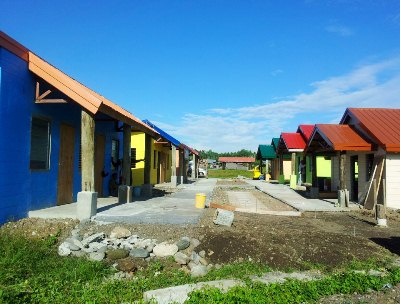
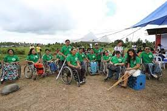

Home | Profile | Needs Assessment Resource Matching | Science | Gallery

SAKADAB is a community of persons with physical disabilities that live together in one community to help one another.
"Samahan ng may iba't ibang Kakayahan sa Dabaw" is their complete name. The SAKADAB organization works to improve the quality of life for
those who are physically disabled and to support their journey to independence. The physically disabled members of the organization
have benefited from SAKADAB's assistance in learning skills including baking, handicrafts, woodworking, and welding.

The residents of SAKADAB reside in homes resembling that of dormitories. Electricity and water bills
are split among the residents. But if there is a family, they live in a bigger house designed for children.
There are 35 people that reside in this community in total. 19 of them have ages that range from 20 to 50.
The remaining five are seniors. The remainder consists of accompanying adults and kids. They receive
financial assistance from their relatives as well.
Visit SAKADAB Social Media and other information!